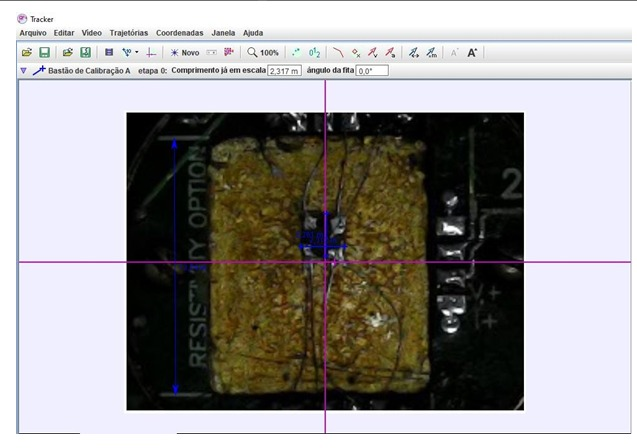

.png)
Responsável pela criação de relacionamentos e parceiras com empresas tanto de pequeno quanto de grande porte além de prestar assessoria à presidência para garantir o desenvolvimento da cultura e a estratégia da EJ. Além disso, fui líder do comitê de representatividade e do time de cultura.
As parceria que formei durante meu tempo como líder:
Hoje realizo um projeto de consultoria relacionado a Gestão de Estoque para uma empresa de Guaratinguetá.
Diretor de projetos da equipe EEL Racing em 2021 em que liderei 4 gerentes de projetos utilizando a metodologia SCRUM.
O que foi aprendido e usado:
- Conceitos de mecânica estrutural e de elementos finitos;
- Uso de softwares de simulação e modelagem como Ansys e Solidworks;
- Tive experiência em oficina e gestão de projetos para produzir as partes essenciais do carro

O que foi aplicado:
- Conceitos de Green Belt e da metadologia DMAIC;
- Uso de ferramenta de BI com o próprio PBI e planilhas no excel;
- Uso do framework Scrum para gerenciarmos os projetos de maneira mais ágil, assim como dentro do grupo dividiamos as funções em PO, Scrum Master e time de desenvolvimento,cada um com responsabilidades de acordo com os conceitos de Scrum já apresentados por Jeff Sutherland. Assim, aplicamos suas fases como Sprint Backlog, as Sprint, Sprint Review e outras,além de acompanharmos nosso desenvolvimento com velocitys charts entre outros.

-
Projeto de pesquisa sobre a Anisotropia de SrTiO3 em que estudamos e analisamos sua resistividade
comparando com suas propriedades físicas, porém tive artigos relacionados com outros temas
relacionados, um deles rendeu na revista nature que até a data presente ainda será publicado.
O que foi aprendido e usado:
- Conceitos de física do estado sólido;
- Conceitos de estrutura dos materiais;
- Ferramentas de medição e preparação das amostras;
- Uso do sotware COMSOL para simulações multifísicas;
